A wick is small, patient, and still burning when everything else has gone quiet.
Wick keeps a laptop awake with the lid closed, so the work that was running keeps running. Then it puts
sleep back. The whole identity comes from that one picture: a closed thing with a light still on inside.
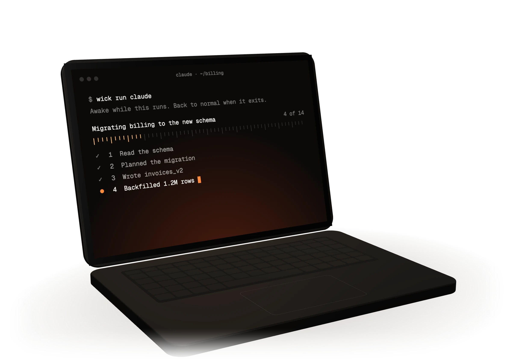
Open. An agent at work on the screen.
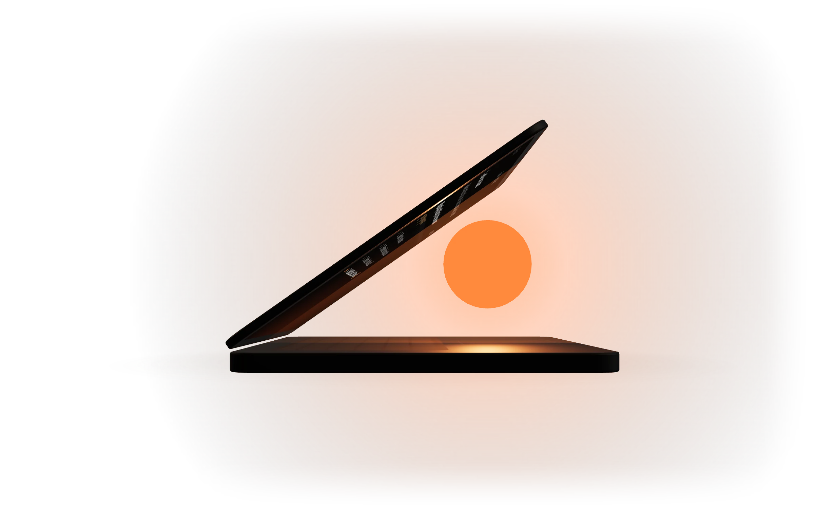
Ajar. Seen from the side at 35 degrees, with the ember inside. This is the mark.
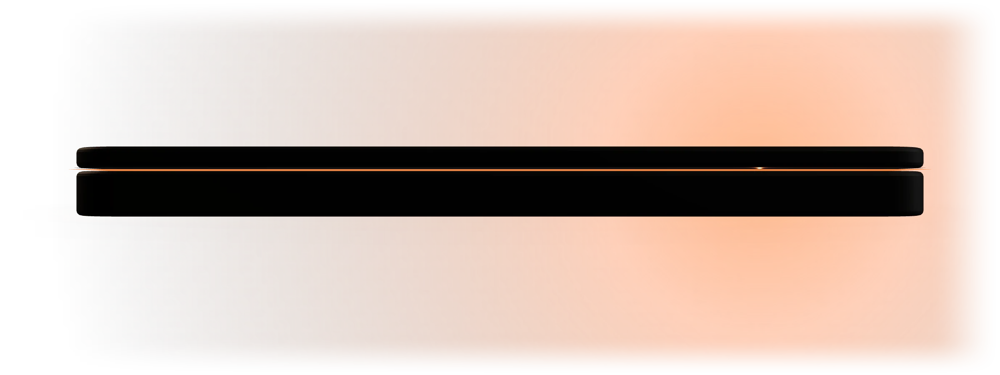
Shut. Two lines with a seam of light between them. Also a wick.
02 The markWick brand book
One stroke and one dot.
A laptop from the side with its lid just ajar, and the ember lit inside it. The mark sits on a 24 unit
grid. Its single stroke is 2 units wide with round caps and joins. The ember has a radius of 2.25.
Clear space
One ember, 4.5 units, on every side
Smallest size
16 px. Below that, use the one colour mark
Menu bar
A template glyph, so it takes the bar's colour. Filled ember means awake
03 Logo familyWick brand book
One ember per composition.
In the lockup, the mark has it. When the word stands alone, it moves to the i, where the tittle becomes a
circle of the same area. Never both at once.
Lockup. The defaultLockup, on darkWordmark alone. Large sizes: footers, posters, coversWordmark, on lightOne colour, for print and engraving
04 What not to doWick brand book
It's two shapes. Leave them be.
The files in brand/logo are the logo. The word is outlined, so it never needs retyping.
Don't recolour the ember
Don't make the lid ember too
Don't put the ember out
Don't tilt it. The base is a desk
Don't stretch it
Don't set it on ember. The dot disappears
Don't light two embers
Don't thin it or outline it
05 ColourWick brand book
If it's ember, it's on.
Ember only ever means awake. Not links, not selection, not decoration. When the session stops, every ember
on the screen goes out, including the one in the logo.
Ember#FF8A3DAwake. Nothing else
Hot#FFC27ALit ticks, time passing, warnings on dark
Deep#D9421AThe far end of the glow, and too hot
Paper#F5F2EEDay. Text on dark, primary controls
Canvas#141211Surfaces, and ink on paper
Night#0C0A09The darkest page background
AaPaper on Night17.7 : 1
AaCanvas on Paper16.7 : 1
AaHot on Night12.5 : 1
AaEmber on Night8.4 : 1
AaCanvas on Ember8.0 : 1
AaEmber on Paper2.1 : 1. Never for text
06 TypeWick brand book
Close the lid.
Display
Geist Medium
Headlines and the name. Tight leading, and tracking that tightens as the size grows: -0.058em at the
largest, -0.035em for small headings. SIL Open Font License.
Commands and labels
Geist Mono
brew install --cask s1lvazxy/tap/wick
Small labels are mono capitals at +0.06em.
Inside the app
San Francisco
The system font, as on any Mac app. The panel is not the place to be a brand.
Role
Size
Leading
Tracking
Hero
10.6vw, up to 208 px
0.88
-0.058em
Title
6.7vw, up to 118 px
0.94
-0.05em
Heading
22 to 30 px
1.08
-0.035em
Lead
17 to 22 px
1.42
0
Label
12.5 px, mono capitals
1.5
+0.06em
07 VoiceWick brand book
Deadpan. Short. Exact where it matters.
The joke goes in the headline, the fact goes in the sentence. The headline says we won't cook your laptop. The sentence says 45°C, lid closed, 60 seconds.
The laptop is the straight man. Give the machine opinions. Never tease the person using it.
Numbers are never rounded for effect. 20%, 90 seconds, five minutes. If the app does it, the page says it the same way.
Say what stopped, and why. A session that ends always ends with a plain sentence.
No exclamation marks and no emoji. The ember is the only thing allowed to glow.
Instead of
Wick says
Seamlessly empower your workflow
Close the lid. The agents stay late.
Advanced thermal management
We will not cook your laptop.
Session terminated: thermal event
Stopped to let the Mac cool down.
Supports all major AI agents
It knows who's on shift.
Privacy first analytics
This page doesn't know you're here.
Robust fail safe architecture
It always puts sleep back.
08 Light and imageryWick brand book
The light comes from inside, or from below.
Never from a spotlight, never from a gradient laid on top. There is one laptop, drawn the same way
everywhere, and it's dark unless it's lit by its own ember.
The coal. A Blender render, dithered so the dark end doesn't band. It rises from the bottom edge
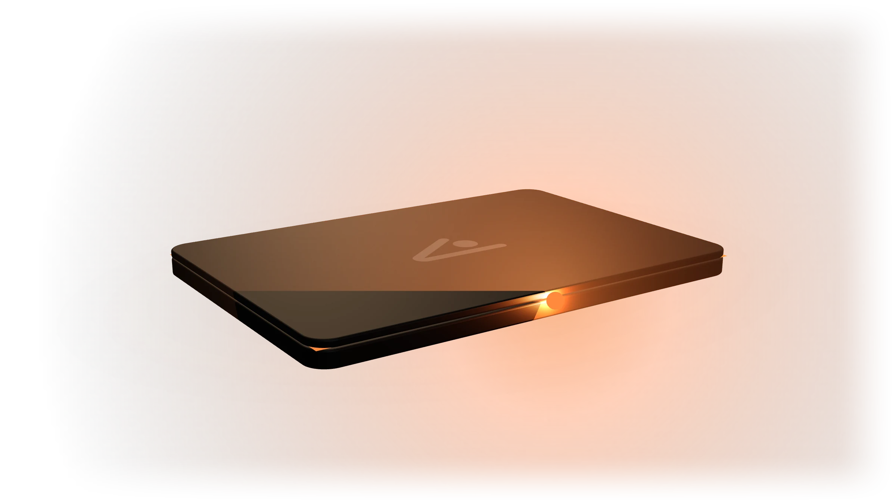
The seam. Shut and awake, a line of light escapes all the way round, and gathers at the frontHeat is Deep, never ember. Ember means awake. Too hot is a different colour, on purposeDusk and dawn. Paper never fades to night through grey. It goes through a sunset
09 MotionWick brand book
The lid follows your hand.
On the website, scrolling and dragging move the same value, so the lid can be stopped, reversed and let
go at any point. Nothing plays at you. Inside the app, things that are used all day don't animate at all.
Press
Scale to 0.97, 100 to 160 ms
Interface
Under 250 ms, ease out. Never ease in
The ruler
A critically damped spring that keeps the velocity of the throw
The ember
Flickers by 5%, irregularly, like a coal. It goes out over a moment, never in one frame
Reduced motion
Stills and plain flow. The page loses nothing it needs
Outcubic-bezier(0.23, 1, 0.32, 1)Things arriving and leavingIn and outcubic-bezier(0.77, 0, 0.175, 1)Things moving across the screen
10 In use, the appWick brand book
App icon. Liquid Glass layers from Icon Composer, the light rendered in Blender
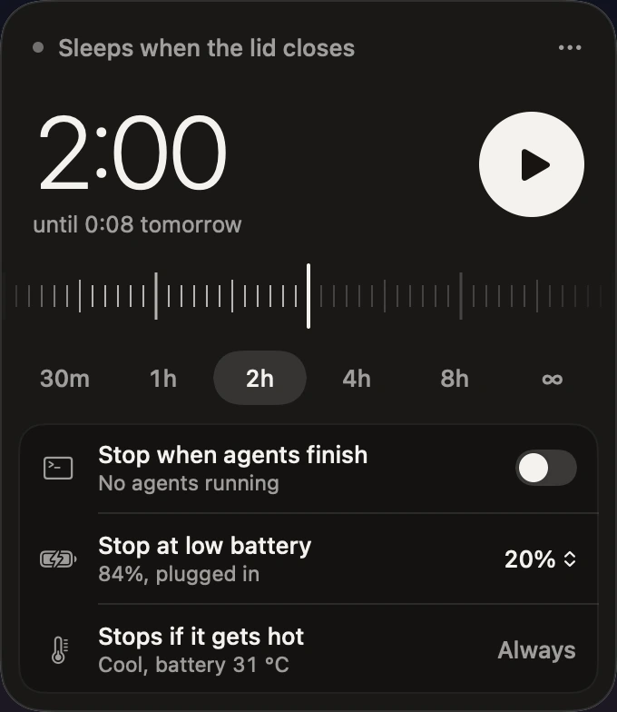
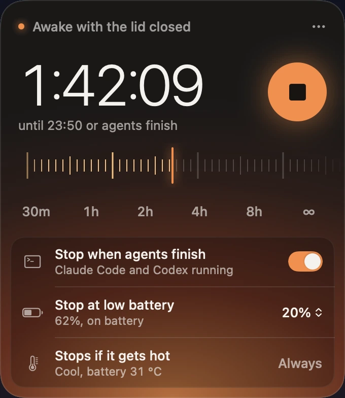
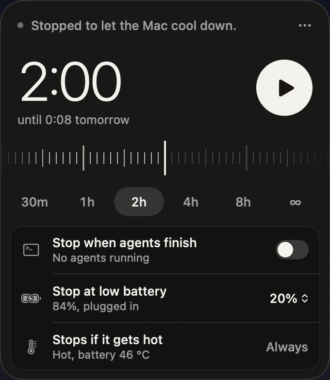
The panel. Idle, awake, and stopped for heat. The glow is only there while the session is
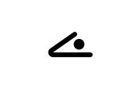
Menu bar. Hollow when the Mac is on its own, filled with the time left when Wick is holding it awake
11 In use, the webWick brand book
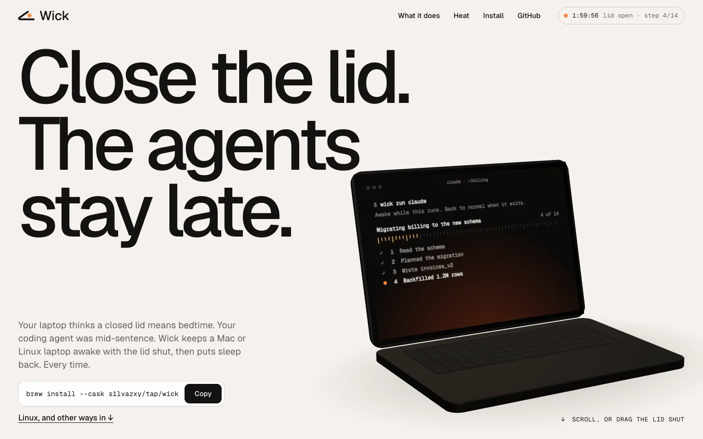
Day. The page opens as the laptop does
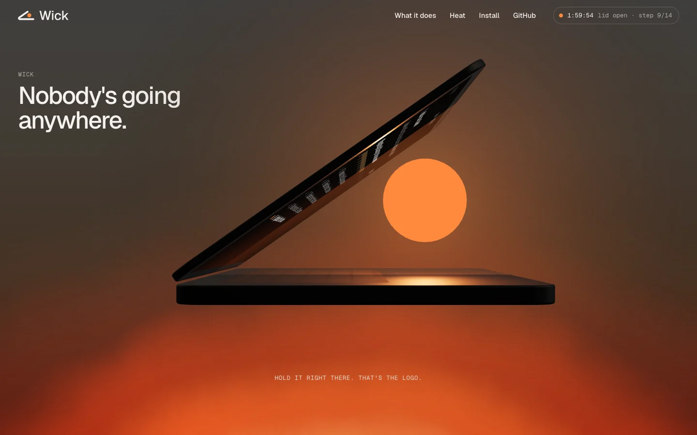
Half way down. The logo, in three dimensions
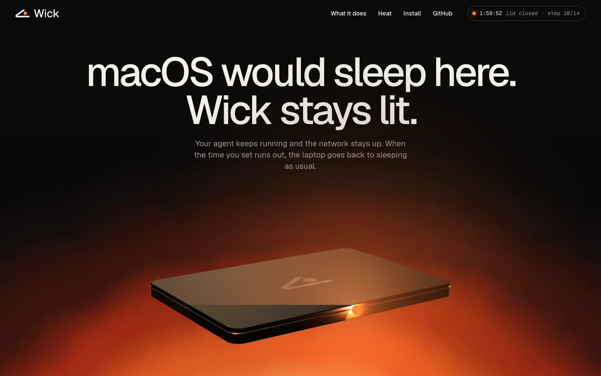
Night. Shut, and still lit
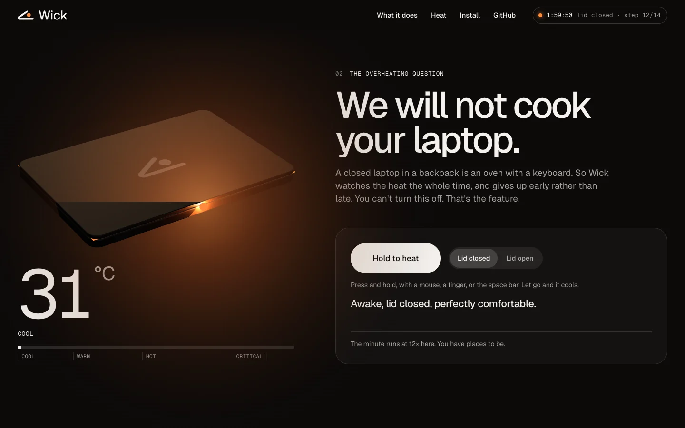
Heat. A demo of the one rule with no switch
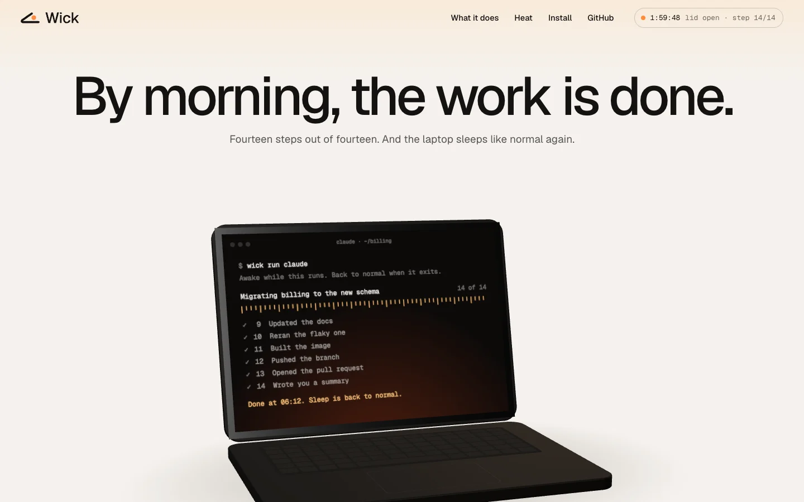
Dawn. Fourteen of fourteen
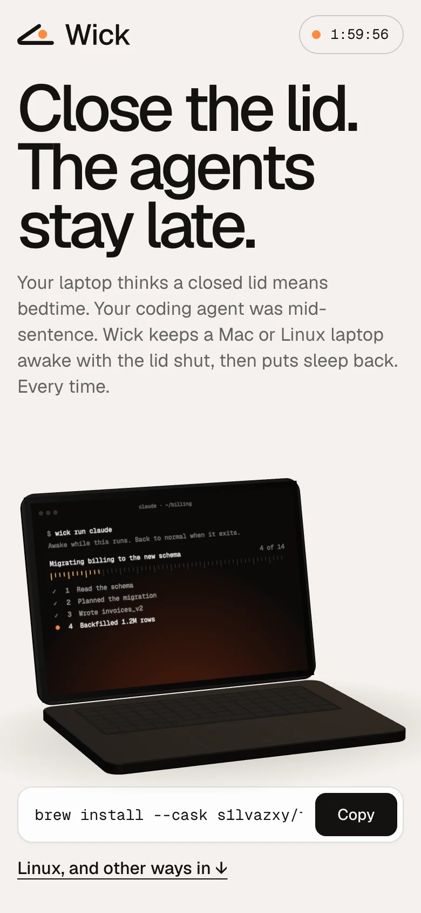
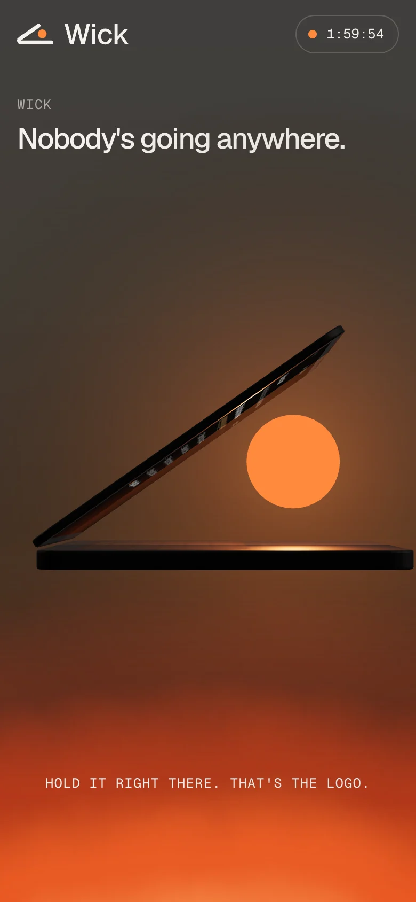
12 FilesWick brand book
Where everything lives.
All of it is in the repository, under brand/, and all of it can be regenerated from source.
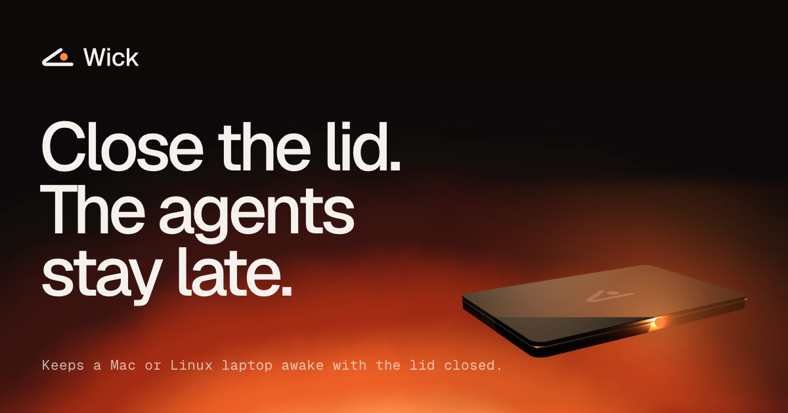
logo/lockup-*.svg
The default logo, on light and dark, and in one colour
logo/mark-*.svg
The mark alone, for small spaces
logo/wordmark-ember-*.svg
The word alone, with the ember on the i
Wick.icon
The app icon. Open it in Icon Composer
imagery/laptop-*.webp
The laptop: open, ajar, shut, at rest, hot, and in the morning